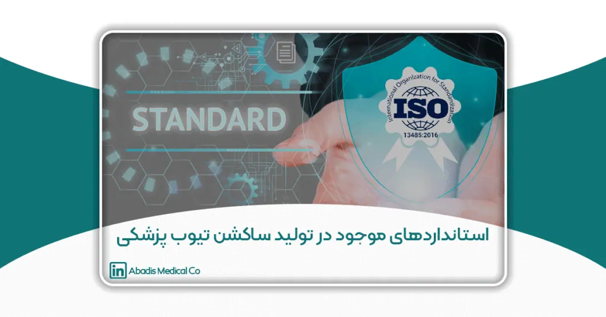
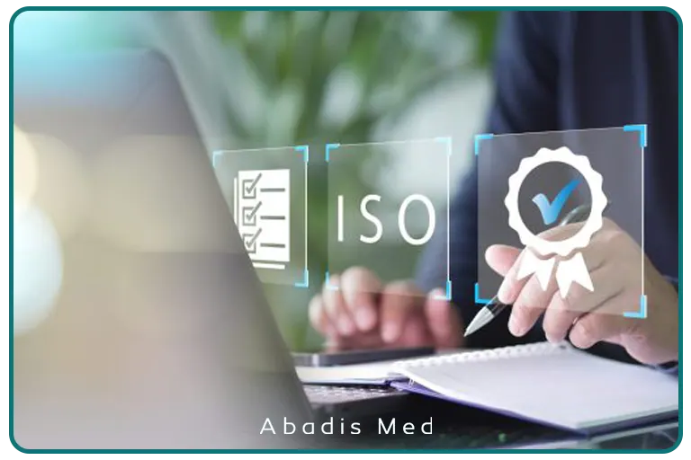
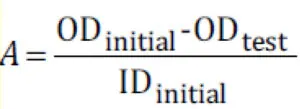

مقدمه
صنعت تجهیزات پزشکی یکی از حیاتیترین صنایع جهان به شمار میرود، زیرا کوچکترین خطا در طراحی یا تولید محصولات آن میتواند منجر به عواقب جبرانناپذیر برای سلامت بیماران شود. در میان ابزارها و وسایل پرکاربرد این صنعت، ساکشن تیوب (Suction Tube) جایگاه ویژهای دارد.
این وسیله به ظاهر ساده اما بسیار کاربردی، نقش مهمی در تخلیه ترشحات، خون و مایعات بدن در حین جراحی، مراقبتهای ویژه و بخشهای ICU و اورژانس ایفا میکند. استفاده از ساکشن تیوب استاندارد میتواند سرعت عمل جراح و ایمنی بیمار را به طور مستقیم افزایش دهد و از مشکلاتی مانند انسداد راههای تنفسی و آلودگی محیط عمل جلوگیری کند.
ساکشن تیوبها معمولاً از مواد پلاستیکی مدیکال گرید ساخته شده و به صورت استریل بستهبندی میشوند. به دلیل تماس مستقیم با بدن و مایعات حیاتی بیماران، کیفیت و ایمنی این وسیله اهمیت بسیار بالایی دارد. تولیدکنندگان موظفاند در تمامی مراحل، از طراحی و انتخاب مواد اولیه گرفته تا فرآیند استریل و بستهبندی، مجموعهای از استانداردهای بینالمللی و ملی را رعایت کنند.
در این مقاله، مهمترین استانداردهای تولید ساکشن تیوب پزشکی بررسی شده و دلایل اهمیت رعایت آنها برای تولیدکنندگان و مراکز درمانی تشریح میشود.
اهمیت رعایت استانداردها در تولید ساکشن تیوب
1. تضمین ایمنی بیمار:
استفاده از ساکشن تیوب استاندارد باعث کاهش احتمال انتقال عفونتها و آلودگیها میشود. یک تیوب غیر استاندارد میتواند باعث آلودگی متقاطع، واکنشهای آلرژیک یا حتی انتقال عوامل بیماریزا شود.
2. ارتقای کیفیت محصول:
رعایت استانداردها باعث میشود تیوب تولید شده مقاومت کافی در برابر پارگی، انسداد و خمشدگی داشته باشد. همچنین انعطافپذیری و دوام محصول در شرایط مختلف درمانی تضمین میشود، که نقش مستقیم در عملکرد تیم پزشکی دارد.
3. رعایت مقررات جهانی:
تولید محصول مطابق با استانداردهای بینالمللی مانند ISO و CE، امکان صادرات و حضور در بازارهای خارجی را فراهم میکند. این امر نه تنها درآمد شرکت را افزایش میدهد، بلکه اعتبار برند تولیدکننده را در سطح جهانی تثبیت میکند.
4. اعتماد پزشکان و بیمارستانها:
مراکز درمانی و پزشکان همواره به دنبال استفاده از تجهیزات پزشکی استاندارد هستند. رعایت استانداردها باعث میشود اعتماد پزشکان و بیمارستانها به برند شما افزایش یابد و خریدهای مکرر و پایدار انجام شود.
5. کاهش ریسکهای قانونی و مالی:
تولید تجهیزات پزشکی بدون رعایت استانداردها میتواند باعث جریمههای سنگین، پس گرفتن محصول از بازار و حتی دعاوی حقوقی شود. رعایت استانداردها، تضمینی برای رعایت قوانین ملی و بینالمللی است.
در مجموع، رعایت استانداردها باعث میشود ساکشن تیوب نه تنها نیاز بازار داخلی را تأمین کند، بلکه امکان حضور موفق در بازارهای بینالمللی را نیز داشته باشد.
استانداردهای بینالمللی در تولید ساکشن تیوب
تولید ساکشن تیوب پزشکی مستلزم رعایت مجموعهای از استانداردهای بینالمللی است که کیفیت، ایمنی و کارایی محصول را تضمین میکنند. در ادامه مهمترین این استانداردها را بررسی میکنیم:
1. استاندارد ISO 13485 – سیستم مدیریت کیفیت
ISO 13485 یکی از پرکاربردترین استانداردها در حوزه تجهیزات پزشکی است و به سیستم مدیریت کیفیت میپردازد. این استاندارد تأکید دارد که تمامی فرآیندهای تولید، از طراحی تا عرضه، باید مستند، قابل ردیابی و تحت کنترل دقیق کیفیت باشند.
موارد کلیدی:
- طراحی و تولید محصول باید مستند و قابل ردیابی باشد.
- کنترل کیفیت در تمام مراحل تولید از مواد اولیه تا بستهبندی اعمال شود.
- مواد اولیه مطابق با الزامات ایمنی و زیستسازگاری انتخاب شوند.
- مستندسازی دقیق فرآیندهای تولید و آزمایشهای کیفیت انجام شود تا در صورت بروز مشکل، ردیابی و اصلاح آن سریع امکانپذیر باشد.
2. استاندارد ISO 10993 – ارزیابی زیستسازگاری
ساکشن تیوب به صورت مستقیم با بدن و مایعات بدن بیمار در تماس است. بنابراین باید از موادی ساخته شود که واکنش آلرژیک، سمی یا سرطانزا ایجاد نکند.
موارد کلیدی در ISO 10993:
- عدم سمیت سلولی (Cytotoxicity): محصول نباید باعث مرگ سلولها شود.
- عدم ایجاد تحریک یا حساسیت پوستی: تماس تیوب با پوست و بافت بدن بیمار باید ایمن باشد.
- تست سمیت سیستمیک: آزمایشها باید نشان دهند که تیوب باعث آسیب به سیستمهای داخلی بدن نمیشود.

3. استاندارد ISO 14971 – مدیریت ریسک
تولیدکنندگان موظفاند خطرات احتمالی مرتبط با استفاده از ساکشن تیوب را شناسایی و مدیریت کنند. این استاندارد کمک میکند تا ریسکهای پزشکی و عملیاتی کاهش یابد.
- پارگی یا انسداد تیوب که میتواند جریان مایعات را مختل کند.
- آلودگی متقاطع که احتمال انتقال عفونت بین بیماران را افزایش میدهد.
- آسیب به بافت بیمار ناشی از استفاده نادرست یا مواد نامناسب.
استفاده از ISO 14971 باعث میشود فرآیندهای تولید و استفاده از ساکشن تیوب ایمنتر و قابل اعتمادتر باشند.
4. استاندارد ISO 11135 و ISO 11137 – فرآیند استریلیزاسیون
ساکشن تیوبها معمولاً به صورت استریل به بازار عرضه میشوند.
- ISO 11135 مربوط به استریلیزاسیون با اتیلن اکساید
- ISO 11137 مربوط به استریلیزاسیون با اشعه گاما
این استانداردها تضمین میکنند که محصول بدون نیاز به استریل مجدد در اتاق عمل قابل استفاده باشد.
5. استاندارد CE Marking (اتحادیه اروپا)
ساکشن تیوبهایی که قرار است در اروپا به فروش برسند، باید نشان CE داشته باشند. این نشان تطابق محصول با الزامات ایمنی، عملکرد و زیستسازگاری اتحادیه اروپا را تضمین میکند.
- CE باعث اعتماد بیشتر مراکز درمانی اروپایی به محصول میشود.
- بدون CE، امکان فروش قانونی در بازار اروپا وجود ندارد.
6. FDA (سازمان غذا و داروی آمریکا)
برای صادرات به آمریکا، تولیدکنندگان باید الزامات FDA 21 CFR Part 820 را رعایت کنند. این مقررات شامل:
- کنترل کیفیت محصولات
- مستندسازی فرآیندهای تولید
- ردیابی محصولات پزشکی
رعایت این استانداردها باعث میشود ساکشن تیوبها در بازار آمریکا قانونی و معتبر باشند.
ویژگیهای کیفی مورد انتظار در ساکشن تیوب استاندارد
برای اینکه یک ساکشن تیوب پزشکی واقعاً استاندارد و ایمن باشد، تنها رعایت استانداردهای بینالمللی کافی نیست؛ ویژگیهای فنی و کیفی محصول نیز اهمیت بالایی دارند. این ویژگیها تضمین میکنند که تیوب در شرایط واقعی بیمارستانی و جراحی عملکرد بهینه داشته باشد.
1. مواد اولیه باکیفیت
- ساکشن تیوبها معمولاً از PVC یا سیلیکون مدیکال گرید ساخته میشوند.
- این مواد باید غیر سمی، انعطافپذیر و مقاوم در برابر پارگی باشند
- استفاده از مواد بیکیفیت میتواند باعث واکنش آلرژیک، پارگی یا کاهش طول عمر تیوب شود.
2. انعطافپذیری مناسب
- انعطافپذیری تیوب باعث میشود کاربران بتوانند به راحتی آن را در مسیرهای پیچیده بدن قرار دهند.
- انعطاف کم میتواند منجر به آسیب به بافتهای حساس یا انسداد مسیر مایعات شود.
- انعطاف بیش از حد هم میتواند کنترل جریان مایعات را دشوار کند.
3. شفافیت و دید مناسب
- ساکشن تیوبهای استاندارد معمولاً شفاف یا نیمه شفاف هستند تا پزشک یا پرستار بتواند جریان مایعات و حجم جمعآوری شده را مشاهده کند.
- این ویژگی کمک میکند کنترل دقیقتر و واکنش سریعتر در شرایط اورژانسی ممکن شود.
4. مقاومت در برابر خمشدگی و پارگی
- تیوب باید در حین استفاده در شرایط پیچیده جراحی یا مراقبتهای ویژه خم شود بدون آنکه پاره شود.
- مقاومت بالا باعث میشود عملیات پزشکی بدون وقفه و خطرناک انجام شود.
5. سایزبندی متنوع
- ساکشن تیوبها در سایزهای مختلف تولید میشوند تا با نوع جراحی، سن و وزن بیمار و محل استفاده سازگار باشند.
- انتخاب سایز مناسب جریان مایعات را بهینه و خطر آسیب بافت را کاهش میدهد.
6. سازگاری با تجهیزات جانبی
- تیوب باید با ساکشن کانکتور، فیلترها و سایر تجهیزات بیمارستانی سازگار باشد.
- عدم سازگاری میتواند باعث نشت، انسداد یا کاهش عملکرد سیستم ساکشن شود.
7. بستهبندی و استریلیزاسیون
- بستهبندی باید از ورود آلودگی جلوگیری کند و استریلیزاسیون محصول را حفظ کند.
- معمولا ساکشن تیوبها با گاز اتیلن اکساید یا اشعه گاما استریل میشوند.
- بستهبندی استاندارد باعث میشود تیوب بدون نیاز به استریل مجدد، آماده استفاده باشد.
استانداردهای ملی در ایران
در ایران، تولید تجهیزات پزشکی مانند ساکشن تیوب تحت نظارت سازمان ملی استاندارد ایران و وزارت بهداشت، درمان و آموزش پزشکی قرار دارد. رعایت این استانداردها علاوه بر تضمین ایمنی بیماران، به تولیدکنندگان اجازه میدهد محصول خود را در بازار داخلی عرضه کنند و برای صادرات آماده شوند.
استانداردهای ملی و الزامات قانونی
1. اخذ پروانه ساخت از اداره کل تجهیزات پزشکی (IMED)
- قبل از شروع تولید، کارخانه باید مجوز رسمی برای تولید تجهیزات پزشکی یکبار مصرف داشته باشد.
- این مجوز نشان میدهد که فرآیند تولید مطابق با استانداردهای بهداشتی و فنی است.
2. رعایت استانداردهای بینالمللی
- علاوه بر استانداردهای ملی، تولیدکنندگان ایرانی موظفاند ISO 13485، ISO 10993 و CE را در فرآیند تولید رعایت کنند تا محصول قابل اعتماد و صادراتی باشد.
3. کنترل کیفیت دقیق در مواد اولیه، تولید و بستهبندی
- هر مرحله تولید، از انتخاب مواد اولیه تا بستهبندی نهایی، تحت کنترل دقیق قرار میگیرد.
- تستهای زیستسازگاری، مقاومت، انعطافپذیری و شفافیت تیوب الزامی هستند.
4. تاییدیه استریلیزاسیون و آزمایش زیستسازگاری
- قبل از عرضه، محصولات باید آزمایشهای لازم برای تأیید استریلیزاسیون و بیخطر بودن برای بدن انسان را پشت سر بگذارند.
شاخصهای کلیدی استاندارد ملی ایران 15504 در تولید ساکشن تیوب پزشکی
استاندارد ملی ایران به شماره 15504 با عنوان «وسیله پزشکی یکبار مصرف – لوله ساکشن برای مصارف پزشکی – ویژگیها و روشهای آزمون»، یکی از مهمترین مراجع فنی برای تولید و ارزیابی ساکشن تیوب در کشور محسوب میشود. این استاندارد بهصورت دقیق، الزامات فیزیکی، ابعادی، مکانیکی، استریلیزاسیون، آزمونها و نشانهگذاری محصول را مشخص میکند.
1. الزامات مواد اولیه
طبق استاندارد 15504:
-
مواد مورد استفاده در ساخت ساکشن تیوب باید مدیکال گرید بوده و عاری از هرگونه ماده سمی، ناخالصی، حباب هوا، ترک، پلیسه و نواقص ظاهری باشند.
-
سطح داخلی و خارجی تیوب باید صاف و یکنواخت باشد تا از تجمع آلودگی و انسداد جریان جلوگیری شود.
2. الزامات ساختاری ساکشن تیوب
ساختار ساکشن تیوب شامل سه بخش اصلی است:
-
بدنه لوله
-
کانکتور (Connector)
-
قطعه انتهایی (End-piece)
طراحی این اجزا باید بهگونهای باشد که:
-
اتصال بین قطعات محکم و بدون نشت باشد
-
در حین استفاده دچار جداشدگی ناگهانی نشود
-
عملکرد یکنواخت جریان ساکشن حفظ شود
3. شاخصهای ابعادی و سایزبندی
استاندارد 15504 بهطور مشخص به ابعاد زیر اشاره میکند:
-
قطر خارجی لوله
-
طول کلی ساکشن تیوب
-
سایزبندی بر اساس سیستم Charriere (CH)
سایزهای مختلف (مانند CH25، CH30، CH35) باید مطابق جدولهای استاندارد تولید شده و تلرانسهای ابعادی مشخص رعایت شوند تا سازگاری کامل با دستگاههای ساکشن بیمارستانی فراهم شود.
4. مقاومت در برابر جمعشدگی (Collapse Resistance)
یکی از مهمترین شاخصهای عملکردی در استاندارد ملی ایران 15504، مقاومت ساکشن تیوب در برابر جمعشدگی تحت فشار منفی است. ساکشن تیوب باید در شرایط کاری واقعی، بهویژه هنگام اعمال فشار منفی توسط دستگاه ساکشن، شکل هندسی و عملکرد یکنواخت خود را حفظ کند.
بر اساس این استاندارد:
-
ساکشن تیوب نباید تحت فشار منفی در حدود ۳۰۰- میلیمتر جیوه دچار جمعشدگی، انسداد یا افت عملکرد شود.
-
آزمون مقاومت در برابر جمعشدگی باید در شرایط دمایی کنترلشده و مطابق روش آزمون استاندارد انجام شود.
-
تغییر شکل دائمی پس از اعمال فشار منفی مجاز نیست و تیوب باید پس از آزمون به وضعیت اولیه خود بازگردد.
درجه فرورفتگی (Degree of Flattening)
در همین آزمون، یکی از شاخصهای کلیدی برای ارزیابی عملکرد تیوب، درجه فرورفتگی آن است. درجه فرورفتگی بیانگر میزان تغییر شکل مقطع لوله تحت فشار منفی بوده و نقش مستقیمی در حفظ جریان یکنواخت ساکشن دارد.
طبق الزامات استاندارد 15504:
-
میزان درجه فرورفتگی ساکشن تیوب در کل طول آن نباید از مقدار 0.5 تجاوز کند.
-
محاسبه درجه فرورفتگی بر اساس ابعاد اولیه و ابعاد تغییر شکلیافته لوله انجام میشود و نتیجه آن باید در محدوده مجاز استاندارد قرار گیرد.
-
رعایت این شاخص تضمین میکند که تیوب در حین استفاده دچار افت جریان، انسداد یا اختلال عملکرد نشود.
فرمول محاسبه درجه فرورفتگی به شرح زیر است:

در بازار ایران، تنها شرکت دانش بنیان مخازن طبی آبادیس و سوپا توانستهاند ساکشن تیوبهایی با درجه فرورفتگی کمتر از 0.5 مطابق با الزامات استاندارد ملی تولید کنند که این موضوع نشاندهنده سطح بالای کنترل کیفیت و طراحی مهندسی محصول است.
5. استحکام اتصال کانکتور به بدنه
طبق استاندارد:
-
اتصال بین کانکتور و بدنه لوله باید حداقل 50 نیوتن نیروی کششی را با سرعت مشخص (200 میلیمتر در دقیقه) تحمل کند.
-
جداشدگی یا لغزش اتصال در این آزمون قابل قبول نیست.
این شاخص نقش مهمی در جلوگیری از نشت، قطع ناگهانی ساکشن و افزایش ایمنی بیمار دارد.
6. آزمون نشتی (Leakage Test)
در آزمون نشتی:
-
ساکشن تیوب تحت فشار مشخص هوا در زیر آب هیچ گونه نشتی، غبار و خروج هوا را نباید داشته باشد.
-
هیچگونه نشتی، حباب یا خروج هوا نباید مشاهده شود.
این آزمون تضمینکننده ایمنی عملکرد تیوب در شرایط واقعی درمانی است.
7. الزامات استریلیزاسیون
بر اساس استاندارد 15504:
-
ساکشن تیوب باید بهصورت استریل عرضه شود.
-
روشهای استریلیزاسیون قابل قبول شامل:
-
گاز اتیلن اکساید
-
سایر روشهای مورد تأیید استانداردهای ملی
-
همچنین انطباق با استانداردهای استریلیزاسیون مرجع (مانند استانداردهای ملی مرتبط با وسایل استریل پزشکی) الزامی است.
8. نشانهگذاری و بستهبندی
استاندارد ملی ایران الزام میکند که اطلاعات زیر بهصورت واضح روی بستهبندی درج شود:
-
نام محصول
-
استریل بودن محصول
-
شماره LOT
-
تاریخ تولید و انقضا
-
یکبار مصرف بودن
-
نام و مشخصات تولیدکننده
بستهبندی باید بهگونهای طراحی شود که استریلیتی محصول تا زمان مصرف حفظ گردد.
چالشهای تولید ساکشن تیوب در ایران
- دسترسی به مواد اولیه باکیفیت و مدیکال گرید.
- هزینههای بالای اخذ استانداردهای بینالمللی.
- لزوم سرمایهگذاری در تجهیزات مدرن برای استریل و بستهبندی.
- رقابت با برندهای خارجی دارای تاییدیه CE و FDA.
نقش برند آبادیس در تولید ساکشن تیوب استاندارد
شرکت مخازن طبی آبادیس به عنوان یکی از تولیدکنندگان پیشرو تجهیزات پزشکی یکبار مصرف در ایران، با رعایت کامل استانداردهای جهانی مانند ISO 13485 و ISO 10993 توانسته محصولاتی مطابق با نیاز بازار داخلی و صادراتی ارائه دهد.
ساکشن تیوبهای تولیدی Abadis دارای ویژگیهای زیر هستند:
- ساخته شده از PVC مدیکال گرید
- استریل شده با گاز اتیلن اکساید
- طراحی شفاف و مقاوم
- تولید در سایزهای متنوع
- دارای تاییدیه IMED
نتیجهگیری
رعایت استانداردهای جهانی در تولید ساکشن تیوب پزشکی یک الزام غیرقابل انکار است. این استانداردها نه تنها ایمنی و سلامت بیماران را تضمین میکنند، بلکه اعتبار برند تولیدکننده را نیز در بازار داخلی و بینالمللی افزایش میدهند.
شرکت مخازن طبی آبادیس با بهرهگیری از فناوریهای نوین و رعایت کامل استانداردهای ISO و مقررات وزارت بهداشت، توانسته جایگاه ویژهای در تولید تجهیزات پزشکی یکبار مصرف پیدا کند. استفاده از ساکشن تیوبهای استاندارد Abadis، راهی مطمئن برای کاهش ریسک عفونت و ارتقای کیفیت خدمات درمانی است.
منابع
1. ISO 13485:2016 – Medical devices — Quality management systems
https://www.iso.org/standard/59752.html
2. ISO 10993 – Biological evaluation of medical devices
https://www.iso.org/standard/68936.html
3. ISO 14971:2019 – Medical devices — Application of risk management
https://www.iso.org/standard/72704.html
4. ISO 11135 & ISO 11137 – Sterilization of medical devices
https://www.iso.org/
5. CE Marking for Medical Devices – European Commission
https://health.ec.europa.eu/medical-devices
6. FDA – U.S. Food & Drug Administration
https://www.fda.gov/medical-devices
7. سازمان ملی استاندارد ایران – تجهیزات پزشکی
https://www.isiri.gov.ir/
8. اداره کل تجهیزات پزشکی ایران (IMED)
http://www.imed.ir/